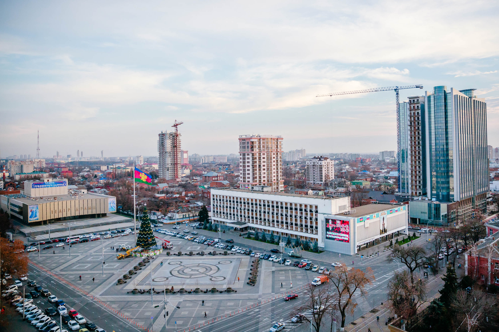

Краснода́р (до 1920 года — Екатеринода́р) — город на юго-западе России, расположенный на правом берегу реки Кубани, на расстоянии 120 км от Чёрного моря (по автодороге от пос. Джубга), 140 км — от Азовского моря (по автодороге от станицы Голубицкой) и 1300 км — к югу от Москвы (по автодороге М-4 «Дон»). Административный центр Краснодарского края. Вместе с прилегающими сельскими населёнными пунктами образует городской округ город Краснодар. Крупный экономический и культурный центр Северного Кавказа и Южного федерального округа, центр историко-географической области Кубань. Неофициально именуется столицей Кубани, а также столицей Юга России.
Часовой пояс
Краснодар находится в часовой зоне МСК (московское время). Смещение применяемого времени относительно UTC составляет +3:00. В соответствии с применяемым временем и географической долготой средний солнечный полдень в Краснодаре наступает в 12:24.
Климат
Краснодар находится на южной границе умеренных широт и имеет переходный от умеренно континентального к субтропическому климату. Температурный режим схож с такими городами, как Нью-Йорк и Филадельфия, с мягкой зимой без устойчивого снежного покрова и жарким летом. Лето в Краснодаре — самый длинный сезон и длится 5,5 месяцев (май-сентябрь). Зима в Краснодаре короткая, средняя продолжительность — 40 дней, примерно с середины января до конца февраля. Самые нестабильные сезоны — это осень и весна.